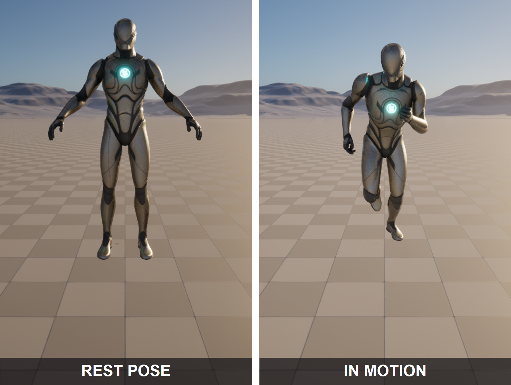

🎛️ Animating with Control Rig
Lesson 4 moved animation that already existed onto your character. But some motion lives in no library: a specific gesture, a custom idle, the one corrective frame where a canned clip's hand clips through a coat. For that you stop importing motion and start authoring it, directly inside Unreal, with Control Rig. This lesson shows you the puppet strings: the rig's hierarchy of bones, controls, and nulls; the forward and backward solve that connect a control you grab to the bone it moves; the two ways (FK and IK) to pose a limb; and finally the payoff, posing and keyframing a character in Sequencer without ever leaving the engine.
🎬 Intermediate Track · Deep Dive
This is a deep-dive companion to the Cinematic Production track. The three core lessons (Characters & Animation, Cinematics with Sequencer, Rendering Output) carry a character from import to final frames. Lesson 4 retargets motion that already exists; this lesson is its natural sequel, the tool you reach for when the motion you need does not exist yet and you have to make it. It pairs with Lesson 2, because Sequencer is where a Control Rig is actually animated.
🎯 Learning Objectives
By the end of this lesson, you will be able to:
- Explain what a Control Rig is and why authoring or tweaking animation in-engine is worth doing
- Identify the three element types in a Control Rig hierarchy: bones, controls, and nulls
- Describe the forward solve (controls drive bones) and the backward solve (bones drive controls)
- Distinguish FK and IK controls and know which suits a swinging limb versus a planted one
- Add a Control Rig track to a character in Sequencer and pose it by setting and keying controls
- Bake an existing clip onto the controls, layer a non-destructive correction, and bake back out to an Animation Sequence
Estimated Time: 40-50 minutes
Prerequisites: Intermediate Lesson 1: Characters & Animation (skeletons and bone hierarchies) and Intermediate Lesson 2: Cinematics with Sequencer (Level Sequences, tracks, and keyframes). A working Unreal Engine 5.8 project with a rigged character, for example Epic's Third Person mannequin, which ships with a finished Control Rig.
In This Lesson
Anatomy of a Control Rig: Bones, Controls, Nulls
Open a Control Rig and the first thing you see is a hierarchy, much like a Skeleton Tree, but it holds three different kinds of element that are easy to confuse. Getting them straight is the whole foundation of the tool.
The three element types
- Bones. An imported copy of the character's skeleton. Bones are what actually deform the mesh, and in most animation rigs you do not touch them directly; they are the output. The rig reads and writes them, but the animator drives them through controls instead.
- Controls. The animator-facing manipulators: the colored circles, boxes, and arrows floating at the joints in the viewport. Each has a shape, a color, and a name, and each is what you actually select, move, rotate, and keyframe. On the mannequin they carry names like
upperarm_r_fk_ctrl,hand_r_ik_ctrl, andspine_01_ctrl. - Nulls. Invisible transforms with no shape and nothing to deform. They exist to organize and offset: a pivot for a foot roll, a parent space a control lives in, a group other controls hang from. You rarely key a null, but they are the scaffolding that makes controls behave.
Here is the concrete version, using the real controls from the mannequin's shipped rig (CR_Mannequin_Body). Notice how the control names mirror the body but tag their role: _fk_ctrl for a forward-kinematics joint, _ik_ctrl for an inverse-kinematics target, _pv_ik_ctrl for a pole vector that aims a joint.
Figure: A Control Rig is a layer of controls sitting on top of the skeleton. The grey bones deform the mesh but are driven, not touched · the coloured shapes are the real controls from CR_Mannequin_Body (FK circles, an IK box, a pole-vector diamond, spine and head controls, and a root), each named for the body part it moves and the way it moves it.
⚠️ Watch out: do not animate the bones
A common beginner mistake is to select and rotate a bone in the hierarchy instead of its control. It may look like it works for one frame, but bones are the rig's output; the forward solve you meet next will overwrite them from the controls on the very next evaluation. Always grab the control (the shape in the viewport), never the bone.
Forward Solve and Backward Solve
What actually connects a control you rotate to the bone that bends is a graph, and it runs in a direction. Control Rig has two main directional graphs, and understanding which one runs when is what stops the tool feeling like magic.
Forward Solve: controls drive bones
The Forward Solve is the everyday graph. It runs on every frame of playback and evaluation. It reads the current value of every control, does whatever math the rig defines (chain an FK arm, solve an IK leg, blend an FK/IK switch), and writes the result onto the bones, which then deform the mesh. This is the direction that makes posing work: you move upperarm_r_fk_ctrl, the forward solve reads it, and the arm bones rotate to follow.
Backward Solve: bones drive controls
The Backward Solve runs the other way. It reads the bones' transforms (typically coming from an existing Animation Sequence) and computes what each control's value would have to be to produce that pose, then writes the controls. You use it to bake a canned clip onto the rig: run the backward solve over a walk cycle and suddenly the walk is expressed as keyframes on the controls, where you can grab any one and adjust it. Without a backward solve, a Control Rig could only ever create motion from scratch; with it, the rig can also take over motion that already exists.
💡 The two solves, side by side
flowchart LR
subgraph FWD[Forward Solve · every frame]
C1[Controls
you posed] --> G1[Rig graph
FK / IK / blends]
G1 --> B1[Bones] --> M1[Mesh deforms]
end
subgraph BWD[Backward Solve · on demand]
A2[Animation Sequence
on the bones] --> B2[Bones] --> G2[Rig graph
inverse]
G2 --> C2[Controls
now keyed]
end
style FWD fill:#e8f5e9,stroke:#4CAF50
style BWD fill:#fff3cd,stroke:#ffc107
Forward solve is how you animate (controls to bones). Backward solve is how you import an existing clip onto the controls (bones to controls) so you can tweak it. Same rig, opposite directions.
There are a couple of other graphs in a full rig, a Construction graph that runs once to build the control shapes and an optional Interaction graph, but for animating you almost only ever care about the forward solve, with the backward solve as the door that lets existing animation in.
FK and IK Controls: Two Ways to Pose a Limb
A limb can be posed two fundamentally different ways, and a good rig gives you both. The mannequin ships each arm and leg with a full FK chain, a full IK setup, and a switch to blend between them (arm_r_fk_ik_switch, leg_l_fk_ik_switch). Knowing which to reach for is a real animation skill.
Figure: The same arm, two control schemes. FK gives you a control on every joint (upperarm_r_fk_ctrl → lowerarm_r_fk_ctrl → hand_r_fk_ctrl) that you rotate in sequence · IK gives you one target for the hand (hand_r_ik_ctrl) plus a pole vector (arm_r_pv_ik_ctrl) to aim the elbow, and solves the joints for you.
When to use which
- FK for swinging, arcing motion. A wave, a punch, a hair-toss, anything where the hand travels a natural arc off the shoulder. Rotations chain beautifully into arcs, and there is no target to fight.
- IK for contact and planting. A hand pressed on a wall, a foot that must stay flat on the floor while the hips move, a prop the character holds. You pin the end in world space and the limb bends to keep it there. This is why feet are almost always animated in IK.
✅ Pro Tip: the FK/IK switch is the point
Real shots mix both, sometimes on the same limb across time: an arm swings freely in FK, then the hand lands on a table and switches to IK so it stays put while the body settles. The mannequin's per-limb switch controls (arm_r_fk_ik_switch and friends) let you blend or snap between the two, and mature rigs even match the pose across the switch so nothing pops. When a foot slides or a hand drifts off a surface, the first question is often "should this be in IK here?"
Posing and Keying in Sequencer
Now the payoff. A Control Rig on its own is just a puppet; Sequencer is where you pull its strings over time. The workflow is short and it is the same every shot.
💡 The pose-and-key loop
flowchart LR
A[Bind character
in a Level Sequence] --> B[Add a Control Rig
track to the binding]
B --> C[Go to a frame]
C --> D[Select a control,
pose it]
D --> E[Set a key]
E --> F{More poses?}
F -->|Scrub to next frame| C
F -->|Done| G[Play back:
Unreal interpolates]
style B fill:#fff3cd,stroke:#ffc107
style E fill:#e8f5e9,stroke:#4CAF50
Bind, add the Control Rig track, then repeat the inner loop: pick a frame, pose a control, key it. Unreal fills the in-between frames.
Add a Control Rig track to a possessed character and every one of its controls becomes a keyable channel in the track, while the manipulators appear on the character in the viewport. From there, animating is exactly the keyframing you learned in Lesson 2, just applied to controls instead of a camera's focal length: park the playhead, pose, key, move on. The difference is that a single "pose" might touch a dozen controls at once, and Unreal interpolates each channel between your keys to produce motion.
Below is a real capture of the character this rig drives: the project's mannequin, shown in the same shot at rest and on a single frame of motion in-engine. Whether that motion comes from hand-keying controls or from a clip driven onto the rig, this is what the loop is for, taking the same skeleton off its rest pose and evaluating it live against the real environment and camera. The manipulators you grab to author it, and the rig graph behind them, live in the Control Rig editor.

Figure: A genuine capture from the ClaudeTest project, same camera and lighting on both sides. Left, SK_Manny (the mesh CR_Mannequin_Body is built for) in its rest pose · right, the same rig driven to a frame of motion in-engine. Control Rig is how you author and shape motion like this without ever leaving the editor.
The moves that speed this up
- Mirror a pose. Pose one arm, then mirror the selected controls to the other side rather than posing it again by hand.
- Tween between keys. With a key before and after, a tween tool slides the current frame's pose toward one neighbour or the other, an instant breakdown or ease.
- Snap a control to an actor. Pin a hand control to a prop so it follows automatically, instead of hand-matching it every frame.
- Zero a transform. Reset a control to its default in one click when a pose goes wrong, no need to remember the numbers.
Baking and Layering
Hand-keying from scratch is only one way to use a Control Rig. The other two are about existing animation, and they are what make the tool a daily driver rather than a special occasion.
Bake a clip onto the controls, then out again
Using the backward solve from Section 3, you can bake an Animation Sequence onto the rig's controls. A retargeted walk from Lesson 4 arrives as keyframes on every control, and now you can fix that one frame where the hand clipped the coat: grab the hand control on that frame, move it out, key it, done, without disturbing the rest of the walk. When you are happy, you bake back out to a brand-new Animation Sequence on the skeleton, which behaves like any other clip in Sequencer and carries no runtime dependency on the rig.
Layer a correction without touching the base
The cleaner option for tweaks is a layered (additive) Control Rig. Instead of editing the baked keys directly, you add a layer on top that stores only your offset from the base animation. The base walk plays untouched; your layer adds a head turn, a limp, a wince. Because the layer is separate, you can tune it, mute it, or delete it without ever risking the original motion. This is the non-destructive way professionals polish canned animation.
Figure: Layered (additive) control rig animation. The base clip is never edited · a separate layer holds only your added offset, so a correction can be tuned, muted, or removed without any risk to the original motion.
💡 Which approach for which job?
flowchart TD
Q{What do you
need to do?} -->|Motion exists
in no library| SCRATCH[Hand-key controls
from scratch]
Q -->|Fix a few frames
of an existing clip| BAKE[Backward-solve the clip
onto controls, edit keys]
Q -->|Add secondary motion
on top of a clip| LAYER[Additive layer
non-destructive]
SCRATCH --> OUT[Bake out to an
Animation Sequence]
BAKE --> OUT
LAYER --> OUT
style SCRATCH fill:#e8f5e9,stroke:#4CAF50
style LAYER fill:#fff3cd,stroke:#ffc107
style OUT fill:#ede7f6,stroke:#7e57c2
Three entry points, one exit: whatever route you take, you can bake the result to an ordinary Animation Sequence and use it like any clip from Lesson 4 in a Sequencer shot.
Hands-On: Pose and Key a Wave
The fastest way to feel Control Rig is to hand-key a two-pose wave on the mannequin, which arrives with a finished rig so there is nothing to build first.
🎛️ Exercise: a two-second wave
- Get the rigged character. Add the Third Person feature so you have
SK_Mannyand its shipped Control Rig. Drop the character into your level. - Make a Level Sequence and bind the character. Create a Level Sequence, then add the mannequin actor to it as a possessable, exactly as you added actors in Lesson 2.
- Add the Control Rig track. On the character's binding, add a Control Rig track and choose the mannequin body rig. The controls now appear on the character in the viewport.
- Key the rest pose at frame 0. With the playhead at 0, select the arm controls and set a key so the arms-down pose is locked in as your starting point.
- Pose the wave at frame 48. Move the playhead to frame 48 (two seconds at 24 fps). Rotate
clavicle_r_ctrlup a little, thenupperarm_r_fk_ctrlto lift the arm out and up, and bendlowerarm_r_fk_ctrlso the forearm rises. Set a key. - Play it back. Scrub from 0 to 48 and watch the arm sweep up. You just authored animation that existed in no library, entirely in-engine.
💡 Hint: the arm barely moves, or moves the wrong way?
FK controls rotate in their own local space, so the axis that raises the arm is not always the one you expect. Nudge a single rotation channel and watch the viewport to learn which axis is "up and out" for that control, then commit. If you grabbed the arm and nothing happened at all, check you selected the control (the shape) and not the bone underneath it, the mistake from Section 2.
✅ Reach exercise: add a hold and a mirror
Two quick extensions. First, add a third key a few frames after 48 with almost the same pose to create a hold at the top of the wave, the tiny pause that makes a gesture read. Second, pose the left arm to match by selecting the right-arm controls and using mirror, so the character waves with both hands without you posing the second arm at all.
Knowledge Check
Question 1
What problem does Control Rig solve that retargeting (Lesson 4) does not?
Correct answer: B · Retargeting moves motion that already exists onto your character. Control Rig is for creating new motion, or correcting existing motion, directly in Unreal, with no round-trip to an external animation program.
Question 2
In a Control Rig hierarchy, which element type do you actually select and keyframe when animating?
Correct answer: C · Controls are the animator-facing manipulators (the shapes in the viewport) that you pose and key. Bones are the rig's output and are driven by the controls; nulls are invisible scaffolding you rarely key directly.
Question 3
What does the backward solve do?
Correct answer: B · The forward solve runs controls to bones every frame. The backward solve runs the other way, bones to controls, so an existing Animation Sequence can be expressed as keyframes on the controls and then edited.
Question 4
You need a character's foot to stay planted flat on the floor while the hips shift the body weight. Which control scheme fits best?
Correct answer: B · IK pins the end of the chain (the foot) in place and solves the joint angles, which is exactly what keeps a foot planted while the body moves. FK, which rotates each joint independently, would make the foot drift. This is why feet are almost always animated in IK.
Question 5
You want to add a subtle head turn on top of a retargeted walk without risking the original walk data. What is the cleanest approach?
Correct answer: B · A layered control rig keeps the base animation untouched and stores your correction as a separate additive offset, so it can be tuned, muted, or deleted without ever altering the original clip. That is the non-destructive way to polish canned motion.
Summary
You moved from consuming animation to making it. Here is the arc:
The reason. Retargeting fills your library with motion that exists elsewhere, but the exact gesture, the custom idle, the one corrective frame, often exists nowhere. Control Rig lets you author and fix animation in-engine, against your real shot, with no round-trip to another program.
The anatomy. A Control Rig is a layer of controls (the manipulators you key) sitting over the skeleton's bones (the output that deforms the mesh), with invisible nulls as scaffolding. The forward solve reads controls and drives bones every frame; the backward solve runs the other way to bake an existing clip onto the controls.
The craft. You pose a limb in FK (rotate each joint, good for arcs) or IK (pin the end, good for contact), switching between them per limb as the shot needs. In Sequencer you add a Control Rig track and run the pose-and-key loop, and for existing motion you bake it onto the controls to tweak or add a non-destructive additive layer, then bake back out to an ordinary Animation Sequence.
🔑 Key Takeaways
- Control Rig authors and corrects animation in-engine, for motion that no library contains
- A rig has bones (driven output), controls (what you key), and nulls (invisible scaffolding); animate the controls, never the bones
- The forward solve drives bones from controls each frame; the backward solve bakes an existing clip onto the controls
- FK rotates each joint (best for arcs); IK pins the limb's end (best for planted feet and contact); good rigs switch between them
- In Sequencer you pose and key controls; bake a clip on to fix it, or layer additively, then bake out to a normal Animation Sequence
👆 A note on this lesson's figures
The rest and motion images are genuine live captures from the ClaudeTest project: the same SK_Manny mannequin (the mesh CR_Mannequin_Body is built for) in its rest pose and on a frame of in-engine motion, same camera and lighting on both sides. The Control Rig's node graph and its on-screen manipulators are a specialized asset editor that the project's automation bridge cannot screenshot directly, so the anatomy, FK/IK, solve, and layering diagrams are labeled illustrations rather than captures. Every control name shown (upperarm_r_fk_ctrl, hand_r_ik_ctrl, arm_r_pv_ik_ctrl, arm_r_fk_ik_switch, spine_01_ctrl, and the rest) is a real control read straight from that rig.
Where this fits
Control Rig sits at the source of the motion the rest of the track uses. Where Retargeting brings in a library and Sequencer arranges it under a camera, Control Rig is how you create the shots that library does not have, or fix the ones it does. Those clips then flow straight into Sequencer and out through Rendering Output. In the wider Story-to-Screen pipeline, this is animation authoring inside Phase 4, feeding the shot assembly of Phase 5.